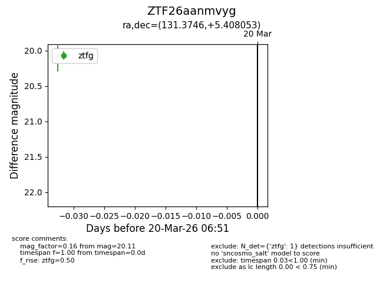
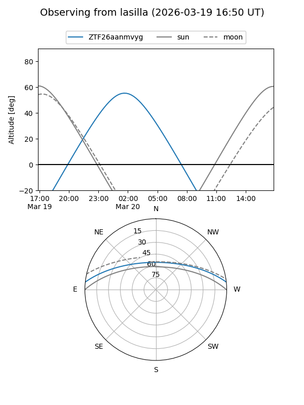
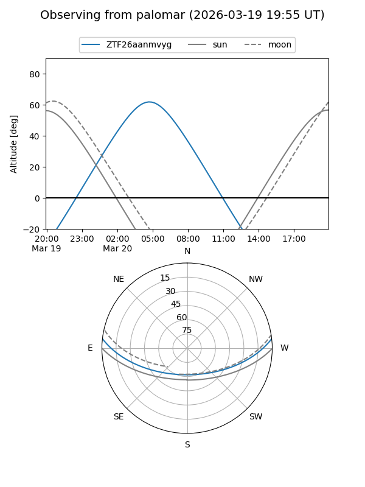

ZTF26aanmvyg
Target ZTF26aanmvyg at 2026-03-20 06:53
Aliases and brokers:
FINK: link
Lasair: link
ALeRCE: link
alt names
ZTF26aanmvyg (ztf,fink_ztf)
Coordinates:
equatorial (ra, dec) = 131.3746,+5.40805
equatorial (HMS+DMS) = 08:45:29.90,+05:24:28.99
galactic (l, b) = (221.5662,+27.77214)
Flags:
Photometry:
last ztfg=20.11
1 ztfg detections
Lightcurve

Visibility


Additional plots